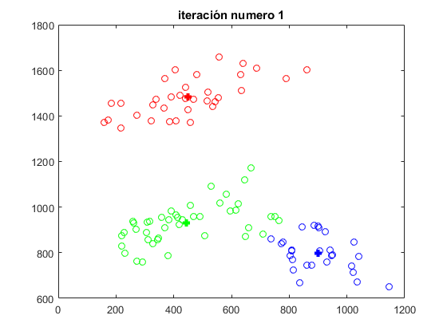
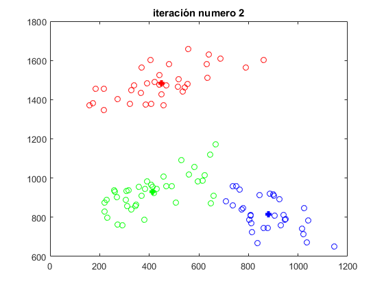
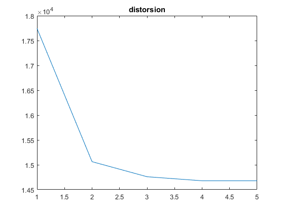

Contents
close all
clear
clc
colores = 'rgbymc';
formantes_utilizados = 1:2;
BOOTSTRAP
bootstrap = 5;
train = 35;
train_set = [];
test_set = [];
resultados_test = [];
archivos = dir(fullfile('data','*.txt'));
for x = 1:length(archivos)
archivo_actual = fullfile('data', archivos(x).name);
formantes_actuales = importdata(archivo_actual)';
formantes_actuales = formantes_actuales(formantes_utilizados,:);
formantes_actuales = formantes_actuales(:,randperm(length(formantes_actuales)));
original{x} = formantes_actuales;
bootstrap_set{x} = formantes_actuales(:,1:bootstrap);
train_set = [train_set formantes_actuales(:,bootstrap+1:bootstrap+train)];
test_set = [test_set formantes_actuales(:,bootstrap+train+1:end)];
resultados_test = [resultados_test ones(1,length(original{x})-train-bootstrap).*x];
end
OBTENGO LA MEDIA DE LOS ELEMENTOS DEL BOOTSTRAP
for x = 1:length(bootstrap_set)
medias(:,x) = calcular_media(bootstrap_set{x});
end
INICIO DEL APRENDIZAJE
TOLERANCIA = 1e-3;
n = 0;
while true
n = n + 1;
clasificacion = clasificacion_euclidea(medias, train_set);
distorsiones(n) = calcular_distorsion(medias, clasificacion);
if n > 1 && abs(distorsiones(end) - distorsiones(end-1)) < TOLERANCIA
break
end
for x = 1:size(medias,2)
medias(:,x) = calcular_media(clasificacion{x});
end
figure
graficar_clasificacion(colores, clasificacion, medias)
end
 
GRAFICO DE LA DISTORSION EN CADA ITERACIÓN
figure
plot(distorsiones)
for x = 1:size(medias,2)
parametro.media = medias(:,x);
parametro.varianza = calcular_varianza(clasificacion{x},parametro.media);
parametro.pi = length(clasificacion{x})/(train*length(clasificacion));
parametros(x) = parametro;
end

DEFINO LA FUNCIÓN DISCRIMINANTE PARA CADA CLASE
for k = 1:length(parametros)
g{k} = @(x) (-1/2) * log( abs( det( parametros(k).varianza ) ) ) + ...
(-1/2) * (x-parametros(k).media)' * parametros(k).varianza^-1 * (x-parametros(k).media) + ...
log(parametros(k).pi);
end
INICIO DEL TEST
clasificacion_train = clasificar_discriminante(g, train_set);
[clasificacion_test, errores] = clasificar_discriminante(g, test_set, resultados_test);
leyenda = {};
figure
hold on;
GRAFICO LA DISTRIBUCIÓN ORIGINAL DE LOS ARCHIVOS
for x = 1:length(bootstrap_set)
plot(original{x}(1,:),original{x}(2,:), [colores(x) '.'], 'linewidth',3)
leyenda = [leyenda ['original ' num2str(x)]];
plot(clasificacion_train{x}(1,:),clasificacion_train{x}(2,:), [colores(x) 'o'])
leyenda = [leyenda ['train set ' num2str(x)]];
plot(clasificacion_test{x}(1,:),clasificacion_test{x}(2,:), [colores(x) '^'])
leyenda = [leyenda ['test set ' num2str(x)]];
end
legend(leyenda, 'Location','best');

CANTIDAD DE ERRORES DETECTADOS EN LOS TEST
disp(['Errores = ' num2str(errores)]);
Errores = 1